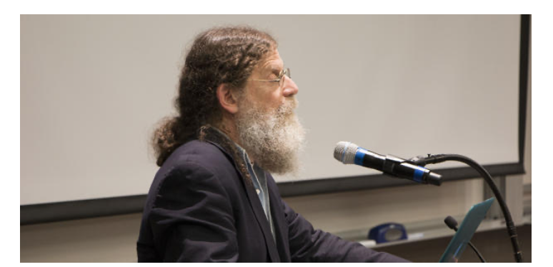

收录于合集 #政治心理 9个
文献来源： Robert Sapolsky, “This Is Your Brain on Nationalism: The Biology of Us and Them,” Foreign Affairs , Vol.98, No.2(March/April 2019),pp.42-47.
作者介绍： Robert Sapolsky，美国著名神经内分泌学家、畅销书作家、斯坦福大学生物学教授，他的研究领域主要包括精神压力、神经元疾病与行为生物学。

一、 杀戮传说
他毫无还手之力。他独自寻找食物显然是错误的，哪怕有一个同伴也不至于如此。而他在山谷中越走越远，更是错上加错。显然，他走进了“他者”（other）的世界。一开始，只有2个敌人，他试图反抗。但他身后又冒出了4个。他就这样被殴杀，然后又被肢解。这样的杀戮已经发生了20起，直到“他者”完全占领了山谷。
乍看起来，这是一个耸人听闻的传说故事。但这却真实发生了，唯一值得庆幸的是，这里的主人公并不是人类，而是乌干达国家公园里的黑猩猩。在过去的十年中，这里的一个雄性黑猩猩群体开始崛起。他们有计划地杀死临近群体的雄性猩猩，绑架幸存的雌性猩猩，并不断扩大自己的领地。在黑猩猩的世界中，相似的故事每天都在上演。一项研究表明，黑猩猩杀死“他者”的可能性是杀死“自己人”的30倍，而施暴者和受害者的人数比例平均为8：1。
众所周知，人类和黑猩猩的DNA相似度高达98%。因此，考虑到黑猩猩的暴力生活，人类为了群体而战似乎并没有什么值得奇怪的。幸或不幸的，黑猩猩的战争局限于食物和地盘，但人类却可以为了意识形态、宗教信仰和经济实力等抽象概念大打出手。当然，人类的行为也有着无与伦比的可塑性。譬如十七世纪在欧洲横行霸道的瑞典人变成了今天的瑞典人。
人类最好的和最坏的时刻可能只是因为前一秒的神经元活动，也可能起源于漫长的演化历史，这是复杂的、包罗万象的生物学与心理学系统。要理解人类群体认同的原始动力和演变过程，包括当代民族主义的复兴倾向，就必须深入探索其背后的生物学和认知基础。
二、 部落思维
截至目前，科学研究没有提供令人乐观的结论。人类的大脑在不到一秒的时间内就可以准确区分内群与外群成员，同时会鼓励我们善待前者而敌视后者。这种偏见往往是无意识的，而且在人类幼年就会表现出来。这种偏见也不依赖于客观的分类，“我们”与“他者”的区隔是流动的。但即使明白自己对民族、种族、宗教或球队的忠诚都有随机的成分，我们仍然难以克服与生俱来的部落思维。
在这种思维下，“他者”会无可避免地触发恐惧情绪。在无数的实验中，黑人的面孔都会显著地刺激白人被试的杏仁核，这意味着他们感受到了切实的威胁。当然，社会教养会让他们在一段时间后冷静下来，但瞬时的恐惧却难以根绝。
部落思维还会将特定群体与情感属性紧密捆绑在一起。经典的实验表明，当被歧视的群体名字与消极的情感词汇一起出现时，被试可以很快完成认知和选择。但当这两者和大脑中的既定映像不匹配时，被试的认知过程就会明显变慢。这说明他们陷入了痛苦的认知失调。
当然，很多偏见是随时时间而沉淀的。但构成偏见的认知结构却几乎是天生的。即使是婴儿也会更喜欢母语者，三岁小孩也会更亲近相同性别与种族的人。
经典研究表明，催产素维系了母子关系和一夫一妻的家庭制度，使人变得更加慷慨而共情，从而构成了亲社会行为的基础。但不幸的是，这种作用只产生于群体内部。对于“他者”，催产素的效果恰恰相反，他会促使个体更加咄咄逼人。
三、 超越亲缘
人类和黑猩猩的最大区别在于群体认同的流动性。“我们”-“他者”的区隔是无可避免的，但却不是一成不变的。此外，人类社会中存在着多种交叉重叠的群体认同。这其中有一些“他者”相对而言并不那么可怕。譬如大晚上半路冒出的可疑分子几乎能吓坏你的杏仁核，但同一球场内对方球队的支持者则很可能让你昏昏欲睡。
一项实验表明，在控制条件下，被试首先会根据肤色来区分人物照片。但当照片中出现各色制服时，制服的分类权重就会远大于肤色。这无疑是长期社会化的结果。此外，即使群体认同的边界被固定下来，但人们对特定群体特性的认知却具有可塑性。譬如在过去的几十年间，发达国家对移民的态度就发生了很大的转变。
上述流动性几乎是人类特有的。在其他动物身上，群体认同与合作行为往往直接来源于亲缘选择。譬如对于啮齿类动物来说，血亲、表亲和陌生的对象严格对应了不同的合作行为。人类也有能力实施基于亲缘选择的暴力，但当代人类社会的群体认同却并不依赖于亲缘选择。这是因为人类社会中充斥着仪式、符号和话语的灌输，这使得人们下意识地采用不同于亲缘选择的信号标记。因此时髦的胡须、头巾和“Make America Great Again”的帽子也能产生强大的群体认同。群体认同的流动性在移民家庭中尤为显著，这在根本上说明人类是可以部分超越亲缘选择的。
四、黑暗革命
虽然起源是血腥的，但我们不该忽略群体认同的积极作用。譬如爱国主义和民族主义促使民众按时交税、关心弱者，哪怕是那些他们从未见过的同胞。这就是群体认同和文化标记的力量。当然，在全球化时代，这种文化标记也很可能被动摇。对于移民家庭而言，现实的邻居也许比历史上的祖先更为重要。当然，黑暗的民族主义仍然令人映像深刻。它曾经把犹太人变成“害虫”，把图西族变成“蟑螂”，把穆斯林变成恐怖分子。目前，这种民族主义的毒害正在卷土重来，这本质上是因为一些政治家想要煽动选民获利。
事实上，如果所有人都能知道民族主义是如此武断，那便不会有人再相信政治家的这套说辞。从科学上讲，民族主义人类认知的产物，因此也可以被认知消解。当然，这只是一厢情愿的想法。群体认同可以鼓励合作、信任和团结，反过来，和睦、友爱的共同体也会孕育更好的认同，因此良善的民族主义是可能的，也是值得追求的。政治家有很多积极的工作去施展抱负，但他们却总是争先恐后地宣扬沙文主义和排外思想。如果人类的生物特质一直被被别有用心地利用，黑暗的民族主义就永远难以克服。
（注：为方便读者阅读和理解，编译对原文进行了较大的删改，请各位读者自行点击阅读原文参阅）
编译：陆屹洲 审校：杨端程 编辑：郭静远
【政文观止Poliview】系头条号签约作者